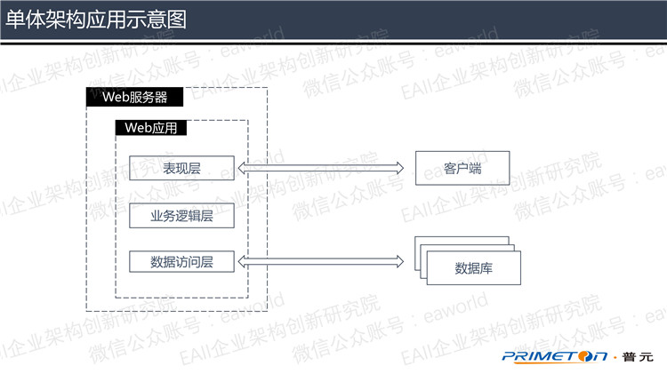
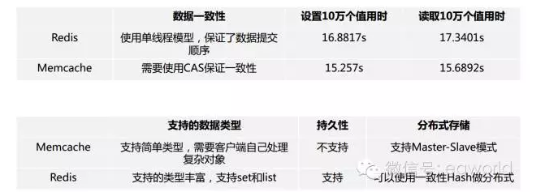

目录
一、应用架构变迁下的Session管理
1.1 单体架构
1.2 分布式架构
1.3 微服务架构
二、微服务架构下分布式Session管理
2.1 Session存储介质
2.2 管理方案实现
三、微服务架构下分布式Session管理方案
四、总结
应用架构变迁下的Session管理
Session一词直译为“会话”，意指有始有终的一系列动作/消息。Session是Web应用蓬勃发展的产物之一，隐含有“面向连接”和“保持状态”两个含义，同时也指代Web服务器与客户端之间进行状态保持的解决方案。
Web服务器与客户端基于HTTP协议进行通信，HTTP协议本身是无状态的，即每一次请求之间都相互独立。但是随着Web应用的发展，Web服务器需要按照用户的一系列业务操作向客户端提供某些特定的、按需的内容，这就需要想办法将原本相对独立的HTTP请求进行关联。Session管理正是上述问题的解决方案，把用户的信息与状态保存在Session中，弥补了Web应用中HTTP协议的不足。
Session管理作为Web应用的重要解决方案之一，随着Web应用架构的不断变迁，对Session管理方案的要求也变得越来越高。对于不同应用架构，Session管理方案也有所不同。
1.1 单体架构
单体架构即是指把一个使用了分层架构的Web应用部署在单节点Web服务器上的架构类型。

图1 单体架构应用示意图
在这种架构中，虽然采用了分层架构，将整个应用分为表现层、业务逻辑层和数据访问层，每一层各司其职，让Web应用的各方面能力有所改善。但是因为应用是单体的，所有代码都部署在一个Web服务器上，随着应用的不断迭代，将会变得臃肿不堪，难以进行维护。
单体架构中，Session管理方案是在用户进行登录的时候将Session存放在应用服务器的内存中，由于只有一个应用服务器节点，用户的所有请求都是这个唯一节点进行响应处理，所以能够轻松的达到保持用户状态的目的。
1.2 分布式架构
随着Web应用的迭代开发，应用代码的维护难度成为了单体应用的一大瓶颈，为了突破这一瓶颈，出现了分布式架构的概念，企业开始使用分布式架构来代替原有的单体架构。

图2 分布式架构应用示意图
在分布式架构中，把原来的单体架构应用，按照不同的功能模块，拆分成若干个较小的应用，分别部署到若干个服务器上。这些服务器上的应用模块，各自提供相应的分布式服务，共同协作，为用户提供服务。
此时的服务器架构中，不再是单一的应用服务器节点，而是有多个服务器节点同时为用户提供服务。单体架构中的Session管理方案已经无法满足分布式架构的需要，用户的登录请求是由分布式架构中的一个服务器节点进行响应处理，当用户操作向其他服务器节点发送请求的时候，就会因为接受请求的节点上没有用户Session而导致操作失败，让用户重新登录。
所以，在分布式架构中，必须保证用户在一个服务器节点进行登陆后，不仅该节点需要在内存中保存用户Session，还需要让其他应用服务器节点也能共享到用户Session。分布式架构进行Session共享的常用方案有如下几种。
（1）存放在Cookie中
当用户Session中需要存放的数据很小的时候，可以选择将Session对象存放在浏览器的Cookie中来实现Session共享。该方案实现方便，但是由于Cookie的存储容量不大，所以只适用于Session数据量小的场景。
（2）Session复制
部分Web服务器能够支持Session复制功能，例如Tomcat。用户可以通过修改Web服务器的配置文件，让Web服务器进行Session复制，保持每一个服务器节点的Session数据都能达到一致。
但是这种方案的实现依赖于Web服务器，需要Web服务器有Session复制功能。当Web应用中Session数量较多的时候，每个服务器节点都需要有一部分内存用来存放Session，将会占用大量内存资源。同时大量的Session对象通过网络传输进行复制，不但占用了网络资源，还会因为复制同步出现延迟，导致程序运行错误。
（3）Session粘滞
Session粘滞是通过负载均衡器，将同一用户的请求都分发到固定的一个服务器节点上，让固定服务器进行响应处理，如此一来，只需要这个节点上保存了用户Session，即可保持用户的状态一致性。
但是Session粘滞方案依赖于负载均衡器，而且只能满足水平扩展的集群场景，无法满足进行应用分割后的分布式场景。
1.3微服务架构
Web应用持续发展，虽然进行了一定的拆分，把过去单体架构的巨石应用切割成了由若干个模块组成的分布式应用，但随着不断的迭代开发，这些模块应用依然会变成巨石应用，代码维护成本直线上升。
尽管可以再次进行应用拆分，但是随着拆分的应用增多，这些应用的编译、打包、部署和整合也成为了新的难题。在这样的一个环境之下，微服务架构开始受到广泛关注。
微服务架构即将一个应用拆分成一套小而相互关联的微服务，微服务之间通过暴露出来的API被其他微服务或系统所调用，在运行时，每个微服务实例通常是一个云虚拟机或一个Docker。众多微服务综合起来，构成了一个完整的微服务架构应用。
微服务架构中的微服务一般可以分为两类：无状态服务和有状态服务。无状态服务比如应用服务器，它们通常是不保存数据的，方便进行横向扩展；有状态服务需要进行数据存储，比如数据库服务和缓存服务。在Web应用中，Session用来存储用户的状态信息，所以Session管理也是有状态服务器的一种。
在实际情况中，一些企业在对原有应用进行微服务改造，实现应用向云平台迁移的时候，并不是一个单纯的微服务架构，而是一个使用微服务框架的微应用架构。
所谓的微应用架构，是由一个门户应用和多个微应用组成的架构体系。每个微应用都是基于微服务框架的Web应用，拥有自己的Web页面和逻辑代码。门户应用通过Web页面将所有微应用的页面整合到一起，然后展现给用户，为用户提供服务。
因为每一个微应用都具有自己的Web页面，这些Web页面都会通过浏览器客户端展现给用户，整个微应用架构可以近似地看作是一个大型的分布式应用，所以每个微应用都需要有Session对象，同时整个微应用架构中，同一用户的Session数据应该是一致的。

图3 单体架构VS微应用
与上文所述的分布式架构相比，微服务微应用架构让应用模块划分更精细，每个微应用的大小合适，方便进行维护和管理。通过使用Devops平台，可以让模块的迭代开发和版本更新变得极为便捷。
微服务框架在降低企业应用开发运维成本的同时，也为微应用之间的Session共享带来了挑战，单体应用被拆分成了十几个不同功能的微应用，分布式架构中的Session管理方案已经无法满足于架构需求。那什么样的Session管理方案才是适合微服务架构的呢，这将是后文中需要思考和探讨的。
微服务架构下分布式Session管理
在分布式架构中，Session管理方案是将用户Session存放在Web服务器内存中，然后通过Web服务器的复制能力或者负载均衡器的请求分发能力来实现Session共享。但是在微服务架构的实践中，企业对大型应用进行微服务改造，让应用向云环境迁移，通常会将应用拆分成十几个甚至数十个微应用，如果仍然使用Session复制、粘滞，不但会带来很多的不必要资源开销，还会降低整个企业应用的可用性和安全性。
因此，在微服务架构下，对Session的管理应该另辟蹊径，不再将Session对象保存在Web服务器内存中，而是在应用服务器架构中引入独立的中间存储介质，将企业应用中的Session对象进行统一管理。

图4 Session集中管理方案示意图
一个好的Session集中管理方案应该具备以下特点。
A、中间存储介质的读写速度要快。之前的Session管理方案将Session对象存放在服务器内存中，有着很高的读写速度，进行Session集中管理后将会在Session读写中引入网络传输，速度会有所降低，所以必须保证中间存储介质的读写速度。
B、中间存储介质要保证高可用。进行Session集中管理后，整个企业应用的Session都会存放在中间存储介质中，如果存储介质是不稳定的，那整个企业应用都将不稳定。
C、对Session的使用者来说，Session管理方案应该是透明的，切换成集中管理方案后用户无感知。
D、Session管理方案不该和某一Web服务器耦合，应该适用于所有常规Web服务器。
根据上述标准可以看出，Session集中管理方案的技术选型应该从Session存储介质和管理方案实现两方面考虑。
2.1 Session存储介质
作为Session对象的存储介质，对读写性能要求较高，所以应该择缓存服务器作为Session的存储介质。目前常用的缓存服务器有Memcache和Redis两种，因此笔者对这两种缓存服务器进行了比较。

由表中数据可以看出，虽然Redis的读写性能稍弱与Memcache，但是Redis支持的数据类型较多，而且支持数据持久化。
除此之外，Memcache使用Slab Allocation机制进行内存管理，其主要思想是按照预先规定的大小，将分配的内存分割成特定长度的块以存储相应长度的Key-Value数据记录，以完全解决内存碎片问题。同时MemCached使用最近最少使用（LRU）算法进行缓存回收，并且Memcached的LRU算法只是针对每个slab类执行，而不是针对整体。
这就意味着，如果所有Session的大小都大致相同，那么他们将会被分成两到三个slab类。所有其他大小差不多的数据也会被放入同一些slab中，将会与Session争用存储空间。一旦slab存满了，即使还有着更大空间的slab，这些存放在已满的slab中的数据还是会被回收，而不是放入更大的slab中。并且在特定slab中，相对而言最老的Session数据将会被Memcached清除，造成用户掉线。
Redis在存储回收策略上要比Memcache更适用于Session管理。Redis3.0版本之后，提供了良好的主从复制和集群能力，能够很好的保障Session数据的高可用。除此之外，Redis还有数据定期失效和订阅通知的能力，可以为Session共享共很多有力的支撑。
2.2 管理方案实现
目前常用的Session集中管理方案有两种，一种是Memcache-Tomcat-Session，另一种是Spring Session。
Memcache-Tomcat-Session是一个基于Memcache和Tomcat实现Session集中管理的开源方案。通过扩展Tomcat的SessionManager，并且在配置文件中替换Tomcat默认的SessionManager来实现Session管理。虽然实现起来比较简单，但是与Tomcat耦合，不适用于其他Web服务器。
Spring Session是Spring提供的一套Session管理方案，通过一个SessionFilter将所有请求进行拦截，然后使用Request包装类来接管Session管理。Spring Session不与Web服务器耦合，能够适用于常规的服务器。同时还提供了统一浏览器多Session等功能。
Spring Session虽然优点颇多，但是实现Session管理功能的代码量也比较大，还需要配合Spring-data-redis使用，学习成本比较大，遇到问题不好维护。
三、微服务架构下分布式Session管理方案
经过上文的分析，在微服务架构中，使用Session集中管理的方式维护微应用的Session是比较好的选择。因为在Session存储介质上，Redis要比Memcache合适，所以使用Redis来集中存放微应用Session更为合适。在Session管理实现方案上，Spring Session的实现思路适用性较高，但是代码量大，学习和维护成本高，所以笔者认为参照Spring Session的思路，自己开发一套轻量级的代码是比较好的选择。
经过设计，微服务架构中的Session集中管理示意图如下。

图5 Session集中管理方案示意图
1、参照SpringSession的实现，使用SessionFilter进行请求拦截，然后通过Request包装类接管Web服务器的Session管理。在Request包装类中，重写getSession方法，Session使用方法和过去一样，对使用者透明。
2、基于jedis开发一个分布式缓存SDK模块，用于Session共享模块和Redis中间进行通信，能够增加Session集中管理的可扩展性，如果需要支持其他的缓存服务器，对缓存SDK进行扩展开发即可。
3、搭建Redis集群用于存放微应用Session，以保证Session数据的高可用。Redis集群示意图如下。

集群中包含两个Master和两个Slave，两个Master对Session数据进行分片存储，而Slave可用于进行数据备份和读写分离。
总结
本文的主要目的在于对微服务架构下分布式Session管理方案进行探索与实践。目前正处于微服务的时代，将会有越来越多的企业开始着手于企业应用的微服务改造，Session管理作为Web应用的基石之一，必然会是企业进行微服务改造时候首先需要考虑的问题之一。随着应用架构的变迁，过去的Session管理方案，已经不能满足于微服务架构的需求，必须寻求新的可行方案。
微服务架构下，整个应用被分割成了大量的小而相互关联的微服务，Session管理需要另辟蹊径，使用集中管理方案来代替原来将Session存放在Web服务器本地缓存的方案。通过向架构中引入高性能的缓存服务器，将整个微服务架构下的Session进行统一管理。
本文中对目前常用的两个缓存服务器进行了对比，认为使用Redis进行Session的统一存储较为合适。同时文中还对常用的两种Session集中管理实现进行了比较，认为虽然Spring Session的实现方案比较好，但是学习成本较高，不便于维护，所以笔者决定参照Spring Session的实现原理，开发一套轻量级的Session管理方案。通过这套轻量级的Session管理方案，能够很好地实现微服务架构下分布式Session的集中管理，并且对于Session的使用者来说，这套方案是完全透明的。
微服务的时代已经到来，微服务架构带来了新的挑战，也带来了更好的机遇，让我们一起遇见未来。